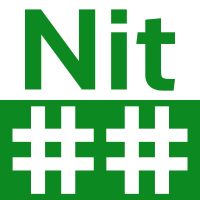

Sponsors


a fun language for serious programming
de 10h du matin à 22h (et plus)
Gratuit | inscription obligatoire
Il s'agit d'un événement d'une demi-journée (12h) consacré au développement et à l'amélioration de technologies et d'applications web libres écrites en Nit.
L'objectif est de faire se rencontrer les développeurs intéressés au projet Nit, ou simplement curieux, en leur permettant de faire ce qu'ils préfèrent faire dans la vie: coder, manger et boire.

Nit est un langage de programmation à objets qui tente de concilier la robustesse des langages statiquement typés à la souplesse des langages dynamiquement typés. Les outils (compilateur et compagnie) sont diffusés sous licence libre et disponibles via Github. Le langage est encore en plein développement mais possède déjà plus d'une centaine de programmes et de bibliothèques.
Nitcorn est un framework léger d'applications web développé en Nit.
Bien que simple, nitcorn permet déjà de gérer, statiquement et dynamiquement, des hôtes virtuels et des routes (en fonction de l'IP, du nom de domaine et chemin de la page demandée), ainsi que des sessions utilisateurs et des cookies.
Plusieurs points d'amélioration sont proposés comme la gestion du HTTPS, l'amélioration du support REST ou la compatibilité CGI.
Les participants pourront choisir de développer, seul ou en groupe, de nouvelles applications Web basées sur les technologies de Nit.
En particulier, cela permettra au développeur débutant en Nit d'expérimenter le développement concret d'applications web avec le langage Nit et les bibliothèques tout en étant soutenu par des experts du langage.
Opportunity: un planificateur de rencontres, de sondages et de pizzas.
NitRPG: une ludification du développement libre où les contributeurs à des projets hébergés par github s'affrontent pour gagner des nitcoins.
nitiwiki: un compilateur de site-web wiki, efficace et léger.
Les participants pourront choisir d'améliorer des logiciels qui les intéressent, et discuter avec les mainteneurs de ces applications.
L'événement est gratuit et ouvert à tous. Que vous soyez expert en programmation Nit, débutant ou simple curieux, vous êtes le bienvenu!
L'événement a lieu au nouveau bureau de Shopify les places sont limitées à une cinquantaine de participants.
Laptop sous Unix (Debian, Ubuntu, MacOSX...)
Logiciel git et compte github
Outils et bibliothèques installées
Bonne humeur et envie de programmer
Espace de travail convivial
Électricité et bonne connexion Internet
Nourriture et boisson (dont café)
Les développeurs du projet Nit pour vous aider
Bonne humeur
Les taches à réaliser et en cours de réalisation sont regroupées via github en issues et pull requests.
Durant la journée, les participants pourront:
choisir des tâches à réaliser (seul ou en groupe)
créer de nouvelles tâches et les organiser
proposer des modifications
relire et approuver des modifications proposées
La progression de chacun sera suivie en temps réel grâce à NitRPG.
{kind=link}
{kind=link}
{kind=link}
{kind=link}